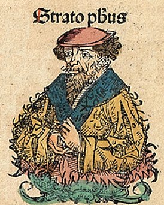

Отрицание бессмертия душ
Большое внимание Стратон уделял
скрытая катинка!

Он полагал, что в передней части головы, между бровями, располагается некая разумная сущность, которую отождествляют с душой[6]. Роль «души» заключается в анализе информации от органов чувств, что приводит к формированию мышления, восприятия и ощущений. «Душа» не может мыслить ничего, что не было воспринято ранее[9]. Её материальным субстратом Стратон считал дыхание («пневму»). Вместе с «пневмой» душа распространяется по организму[6]. Сон, по мнению Стратона, является обособлением «душевной пневмы» от тела, а смерть её полным отделением[4].
Стратон хоть и признавал существование души, не считал её бессмертной.
Он
опровергал аргументы о бессмертии души Платона, которые тот изложил в
диалоге «Федон»[3].
Первый аргумент Платона был основан на диалектике.
Если есть «большее», то должно быть и «меньшее», относительно которого
и
могло возникнуть «большее». То же самое относится и к понятиям
тёплого/холодного, сухого/влажного, сна/бодрствования, а также, что
главное, жизни и смерти. Если бы не существовало постоянного перехода
одного в другое, то вскоре всё стало бы смертью. Так как этого не
происходит, а наоборот, кто-то постоянно рождается и умирает, то
логично
предположить космический круговорот душ из живого в мёртвое, а затем
снова
в живое состояние[10].
Стратон привел семь контраргументов 1 к этому аргументу бессмертия души Платона[11]:
- не обязательно существующая вещь происходит из погибшей;
- если умершая часть, как, например отрезанный палец, не воскресает, то и целое не сможет вернуться к жизни;
- даже если и существуют вещи, которые происходят из неких других объектов, то они никогда не являются полностью идентичными;
- если плоть происходит из пищи, то это не означает, что пища происходит из плоти. Так, уголь возникает из дерева, но дерево не возникает из угля;
- если молодые мужчины превращаются в старых, то старые уже никогда не превратятся в молодых;
- противоположности могут переходить одна в другую лишь до того момента, как одна из них погибнет;
- объекты воспроизводятся лишь до тех пор, пока новый является идентичным старому.
| Статья | Сумма | |
|---|---|---|
| Руб | $ | |
| Зарплата | 10 000 | 600 |
| Сервисы | 10 000 | 400 |
| Итог | 10 000 | 450 |
| Год | 2023 | 2024 | ||
|---|---|---|---|---|
| Полугодие | 1 | 2 | 1 | 2 |
| Доход | 1500$ | 1800$ | 2000$ | 3000$ |
| Расход | -500$ | -600$ | -700$ | -1000$ |
| Итог | 1000$ | 1200$ | 1300$ | 2000$ |